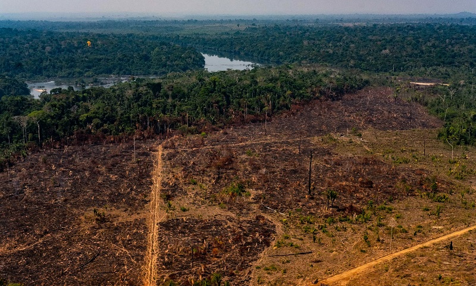

Galeria


Descubra a importância das florestas e como proteger nossos biomas.
Os problemas florestais representam um dos maiores desafios ambientais da atualidade. Eles englobam uma série de impactos negativos que afetam diretamente as florestas, como o desmatamento, as queimadas, a perda de biodiversidade e a exploração ilegal de recursos naturais. Esses fenômenos, frequentemente impulsionados por interesses econômicos e falta de fiscalização, comprometem o equilíbrio dos ecossistemas e colocam em risco a sustentabilidade ambiental do planeta.
As causas desses problemas são diversas e, na maioria das vezes, estão relacionadas às atividades humanas. A expansão da fronteira agrícola é uma das principais responsáveis pela derrubada de áreas florestais, especialmente no Brasil. Grandes extensões de floresta são desmatadas para dar lugar a plantações de soja, cana-de-açúcar e pastagens para criação de gado. Além disso, a mineração em larga escala também contribui significativamente para a degradação ambiental, abrindo clareiras na mata e poluindo os recursos hídricos. A urbanização desordenada, sem planejamento adequado, leva à ocupação de áreas naturais, destruindo habitats e contribuindo para a fragmentação dos ecossistemas. Outro fator preocupante é a atuação de atividades ilegais, como a extração clandestina de madeira, a caça predatória e a grilagem de terras, que agravam ainda mais a situação das florestas brasileiras.
As consequências dos problemas florestais são profundas e afetam tanto o meio ambiente quanto a sociedade. O desmatamento contribui diretamente para o agravamento das mudanças climáticas, pois reduz a capacidade das florestas de absorver dióxido de carbono, um dos principais gases do efeito estufa. A perda de cobertura vegetal também leva à destruição de habitats naturais, colocando em risco milhares de espécies da fauna e flora, muitas das quais são endêmicas e não existem em nenhum outro lugar do mundo. Do ponto de vista social, as queimadas e a poluição do ar associadas ao desmatamento geram problemas de saúde pública, como doenças respiratórias que afetam principalmente crianças e idosos. Além disso, a degradação ambiental desequilibra os ciclos naturais, como o ciclo da água, o que pode resultar em secas prolongadas, enchentes e prejuízos para a agricultura e o abastecimento de água.
No Brasil, os biomas mais afetados pelos problemas florestais são a Amazônia, o Cerrado e a Mata Atlântica. A Floresta Amazônica, considerada a maior floresta tropical do mundo, sofre com o avanço do desmatamento, especialmente por atividades ilegais de extração de madeira e ocupação de terras para agricultura. O Cerrado, conhecido por sua rica biodiversidade, tem sido destruído principalmente pela expansão da agropecuária, o que compromete a sobrevivência de inúmeras espécies. Já a Mata Atlântica, que originalmente cobria grande parte do litoral brasileiro, hoje se encontra severamente fragmentada e degradada em função da urbanização, da poluição e da exploração econômica intensa ao longo dos séculos.
Diante desse cenário alarmante, diversas soluções e iniciativas vêm sendo desenvolvidas com o objetivo de preservar e restaurar os ecossistemas florestais. Entre as estratégias mais importantes está o reflorestamento, que consiste na recuperação de áreas degradadas por meio do plantio de espécies nativas, promovendo a recomposição da vegetação e o retorno da biodiversidade. A implementação de políticas públicas eficazes também é essencial para garantir a proteção das florestas, por meio de leis ambientais rigorosas, fiscalização constante e punição às atividades ilegais . Além disso, a educação ambiental desempenha um papel fundamental na conscientização da população sobre a importância da preservação dos recursos naturais. Investir em práticas sustentáveis, como o manejo florestal responsável, também contribui para o desenvolvimento de uma economia que respeita os limites da natureza e promove a conservação do meio ambiente. Em resumo, os problemas florestais representam uma ameaça séria ao equilíbrio ambiental e à qualidade de vida das gerações atuais e futuras. Combatê-los exige esforços conjuntos entre governos, instituições, empresas e a sociedade civil, em uma busca constante por soluções que garantam a preservação das florestas e o uso sustentável dos recursos naturais.